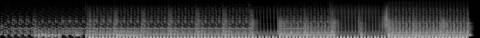
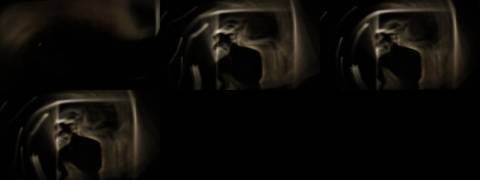
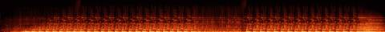

Afterlight / V Mosaic / AFL-14
V · Mosaic · AFL-14 of 22 · 1:32
Warm Phosphor
The note that produced it
On this track: The loop after 0:43.
“I want each to be a mosaic assemblage of the tracks, never the whole track. Each a separate video experiment to see the samples, get the groove. Aim for 1–2 minutes per track.”
“A different attempt and technology for each Afterlight song / music video experiment”: readable as embers from their spectrograms, as Gaussian splats of places.
What was made
Long-exposure light painting: only the lights in the archive footage survive, painted into an exposure that turns and zooms with each kick.
The loop at 0:46 pumped by its own kick · 2:00 and 2:40 frozen underneath
What came back
The note on this version, which produced AFL-15 Beckoning-02:
The texture of the first 49 seconds.
Images made while working: contact sheets, check frames, spectrograms, the stills compared before and after a fix. Tap one to see it full size.






No separate critic agent was run on this cut. The critique came from the director, in the notes on either side of it.
On the cut before
The loop after 0:43.
On this cut
The texture of the first 49 seconds.
Sample map
Every sound placed in the 1:32 study, 130 events by layer, coloured by the track it was cut from. The bars under the map are the whole source tracks; the lit spans are the parts actually used (approximate: stretched and frozen samples are counted by where they start).
The recipe
The function that composed this study, exactly as it ran.
def phosphor():
"""the after-43-second loop, pumped by its own kick, with dark mid-song textures held under it"""
n = 'phosphor'; P = 3.303; m = Mix(92); L0 = snap(n, 46.41)
dark = freeze(cut(n, 120, 127), 20) ; m.put('bed', dark * np.r_[np.linspace(0, 1, 6 * SR), np.ones(14 * SR)][:, None], 0, 0.45, n, 120, 'freeze')
m.put('bed', crackle(92, 22, 0.05), 0, 1, None, None, 'crackle')
t = 6.0
m.put('loop', sweep(loop(n, L0, P, 4), 200, 14000), t, 1.0, n, L0, 'loop'); place_kicks(m, n, L0, P, t, 4); t += 4 * P
m.put('loop', loop(n, L0, P, 8), t, 1.0, n, L0, 'loop'); place_kicks(m, n, L0, P, t, 8)
sl = steps(n, L0 + P, P, 8)
play_pattern(m, 'chop', sl, [0, None, 2, 2, None, 5, 6, 6], t + 4 * P, P / 8, 0.7, n, L0 + P, P, reps=4)
t += 8 * P
# breakdown: the loop drops; one bar echoes away over the frozen dark
m.put('bed', freeze(cut(n, 160, 166), 12), t, 0.5, n, 160, 'freeze')
m.put('echo', echo(cut(n, L0, L0 + P / 2), P / 2, 0.6, 9, 0.85), t, 0.8, n, L0, 'echo')
m.put('loop', hp(loop(n, L0, P, 2), 900), t + 4 * P - 2 * P, 0.5, n, L0, 'hp')
t += 4 * P
m.put('loop', loop(n, L0, P, 8), t, 1.0, n, L0, 'loop'); place_kicks(m, n, L0, P, t, 8)
play_pattern(m, 'chop', steps(n, L0 + 2 * P, P, 16), [0, 0, None, 3, 4, None, 6, 7, 8, 8, None, 11, 12, 12, 14, None], t, P / 16, 0.6, n, L0 + 2 * P, P, reps=8)
t += 8 * P
m.put('loop', tapestop(loop(n, L0, P, 1), 1.5), t, 1.0, n, L0, 'tapestop')
m.put('ember', ember(cut(n, L0, L0 + P), 18, 0.8), t, 1.0, n, L0, 'tail')
m.duck(['loop', 'bed', 'chop'], 0.55, release=0.3)
return mThe picture technique
class Trails:
"""only the lights in the archive survive: each bright point is painted into a long exposure that turns and zooms with the kick"""
def __init__(s, ctx, cats=('lam', 'fir', 'nig', 'moo', 'spa'), seed=2):
s.c = ctx; s.clips = [clip_frames(i, 320, 240, 12, 10) for i in footage(cats, 8, seed)]
s.acc = np.zeros((360, 640, 3), np.float32); s.ch = 0; s.last = -1; s.emb = Embers(20000, 4)
s.cuts = sorted(set(round(e['t'], 2) for e in ctx.events if e['layer'] in ('loop', 'a')) | set(round(x, 2) for x in ctx.kicks[::8]))
def frame(s, t, dt):
c = s.c; k = sum(1 for x in s.cuts if x <= t)
if k != s.last: s.last = k; s.ch = (s.ch + 1) % len(s.clips)
cl = s.clips[s.ch]; f = cv2.resize(cl[int(t * 12) % len(cl)].astype(np.float32), (640, 360))
L = f @ np.array([0.3, 0.59, 0.11], np.float32); light = np.clip((L - 0.62) / 0.38, 0, 1) ** 2.2 * (1 - np.clip((cv2.blur(L, (31, 31)) - 0.6) / 0.3, 0, 1))
col = thermal(0.35 + 0.6 * L)[..., :3] * light[..., None]
kk = c.kick(t, 0.2)
ang = 0.25 * dt * (1 + 2 * c.e('_mix', t)); zoom = 1.0 + 0.004 + 0.03 * kk
M = cv2.getRotationMatrix2D((320, 180), math.degrees(ang), zoom)
d = 0.94 - 0.1 * kk
s.acc = cv2.warpAffine(s.acc, M, (640, 360), borderMode=cv2.BORDER_CONSTANT) * d
s.acc += col * (1 - d) * (2.2 + 2.0 * kk)
out = up(s.acc) * 1.1 * np.array([1.0, 0.72, 0.42], np.float32)
out = out + gaussian_filter(out, (8, 8, 0)) * 0.5
if kk > 0.9:
ys, xs = np.nonzero(light[::4, ::4] > 0.5); idx = np.random.default_rng(int(t * 100)).permutation(len(xs))[:300]
s.emb.emit(xs[idx] * 8.0, ys[idx] * 8.0, vx=0, vy=-90, T=1.0, life=2.0, spread=60)
s.emb.step(t, dt, wind=(30, -30), gust=kk); out += s.emb.draw(t, 1.0, 0.09)
return outFiles
The scripts that made this version, as plain text.
- compose.py254 linesthe nine mosaics: every cut, loop and freeze
- sampler.py154 linesloop, stretch, reverb, echo, freeze, tape stop
- mix.py85 linesthe 178-second set
- sound_design.py91 linesneedle drop, inhales, risers, sub, tape bus
- engines.py367 linesthe ten picture techniques
- vis_common.py106 linesshared embers, archive frames, the finish
- render.py41 linesrenders frames and encodes
- analyze.py21 linestempo and onsets of each source track
A film concept by Sosuke & Watson · CRASH LAB · PAELEO · CINEOSIS LAB